Scientist-Centric Design
In my role as a Lab Automation Engineer at Hexagon Bio, I developed over 50 custom methods and edited more than 200 deck images (eight examples are below). These methods were crafted with a singular goal in mind: to create solutions centered around scientists' needs and workflows. Each deck image, the first thing a scientist sees when they power on the robot, serves as a visual guide, showing where to place reagents and which labware to use. Every deck image, unique and meticulously designed, was paired with the Hamilton methods I developed in close collaboration with the scientists themselves.
Through interviews and observations, I tailored each method to align seamlessly with their physical setups, operational habits, and workflows. Beyond functionality, safety was paramount: I thoughtfully arranged reagents and plates to minimize risks, ensuring that accidents like finger injuries in the lab were virtually eliminated. This scientist-centered approach wove together usability, efficiency, and safety, reflecting my dedication to thoughtful design.
Method Development Process
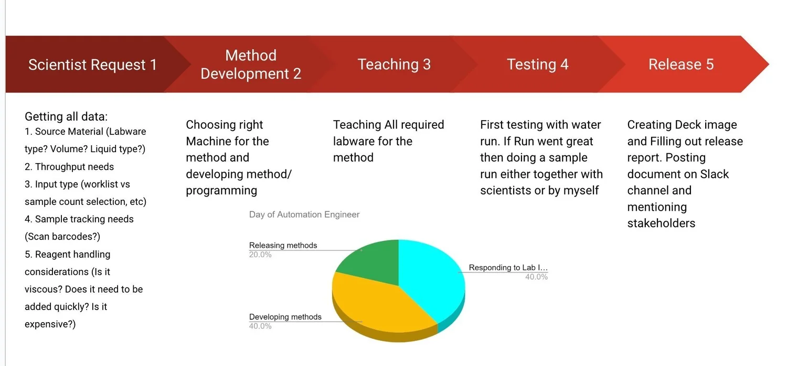
8 examples of decks I have developed (which are set on a Hamilton robot) and a small description of methods:

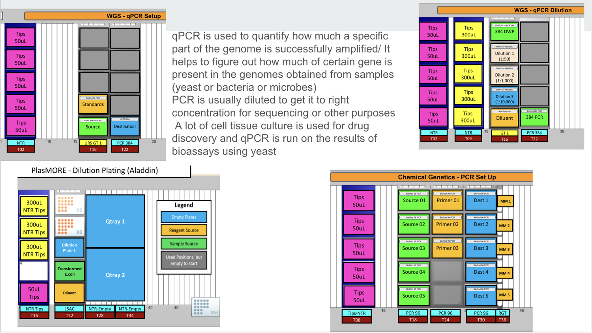
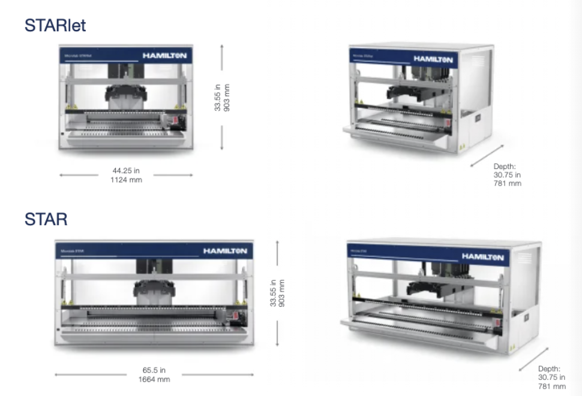
As part of my role, I prioritized safety around lab automation equipment, ensuring that all users could operate the systems confidently and without risk. I trained over 40 scientists and research associates on how to safely use Hamilton robotics systems, emphasizing proper handling techniques and safety protocols. This included step-by-step guidance running methods which I developed for them. Additionally, I replaced HEPA filters on the Hamilton equipment to maintain a sterile environment, particularly when working with BSL-2 microbes. This not only preserved the integrity of the experiments but also protected scientists from potential toxic exposure. My focus on creating a safe and efficient working environment helped foster trust and reliability in the lab's automated workflows.

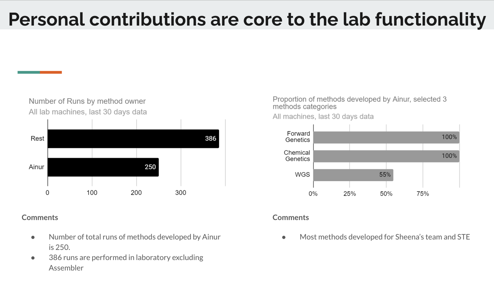
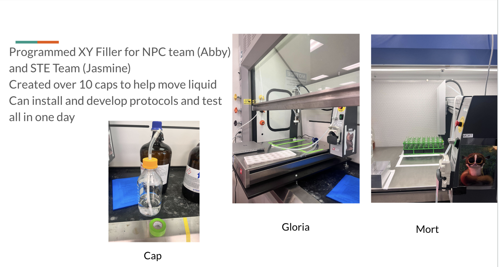

Picture of XY filler: testing different media dispense

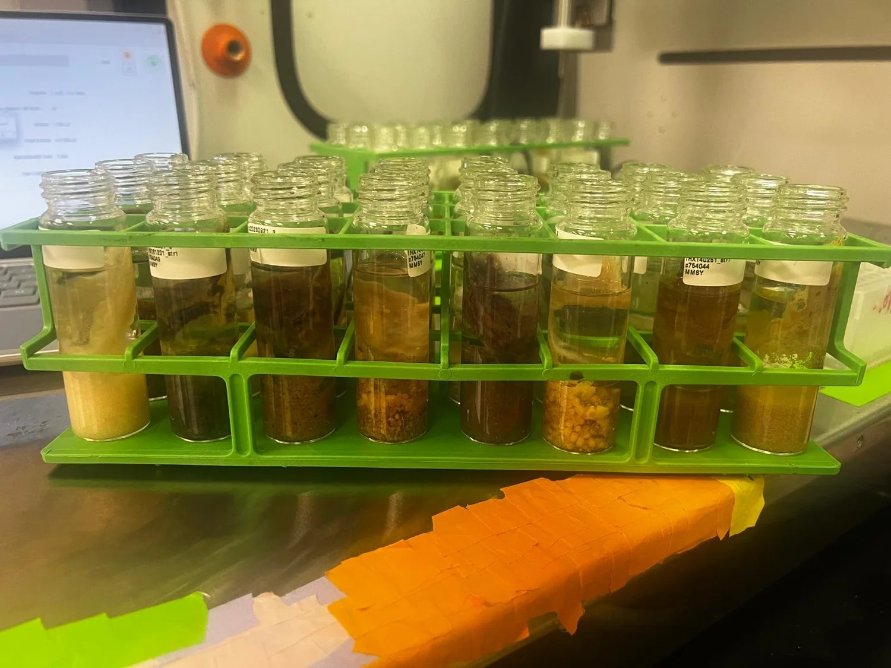


To verify that the XY filler was dispensing the correct amount of liquid, I tested it on over 1,000 bottles with different types of media.
After dispensing from the XY filler, the next step was to get the media out and dispense it into plates. Below you can see how I taught it on the robot, developed a method for it on the Hamilton, and then ran it with real samples.
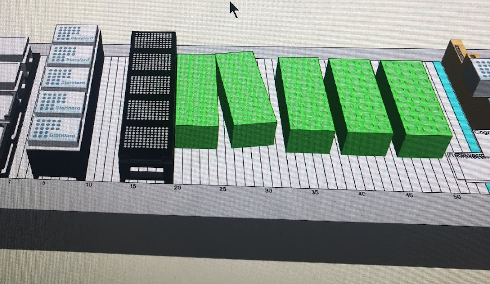
At Hexagon, as well as other companies I worked for, we had a workcell. What is a workcell, you may ask? It is typically a robotic piece of hardware integrated with automation systems, designed to streamline repetitive tasks, enhance precision, and ensure safety in laboratory or industrial workflows. Most workcells, even in leading companies like Ginkgo Bioworks, often use HighRes Biosolutions hardware, with Cellario being the software of choice to operate and manage these systems efficiently. I hold the certification to operate it, which usually costs $7.5k.
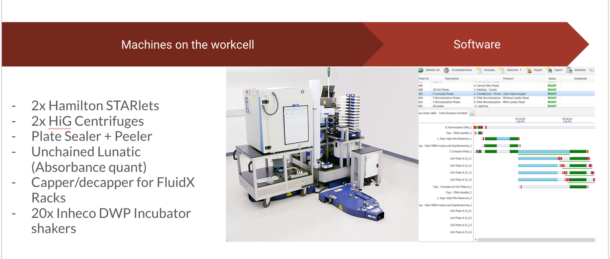
Another robot I worked with, called Mantis, is used mostly for micro dispensing, great for mRNA vaccine delivery.
I gave a workshop about lab automation at BioPunk Society in San Francisco and at the SilkRoad Innovation Hub in Palo Alto during TechCrunch week. I enjoy teaching people how to use robots and running interactive workshops.
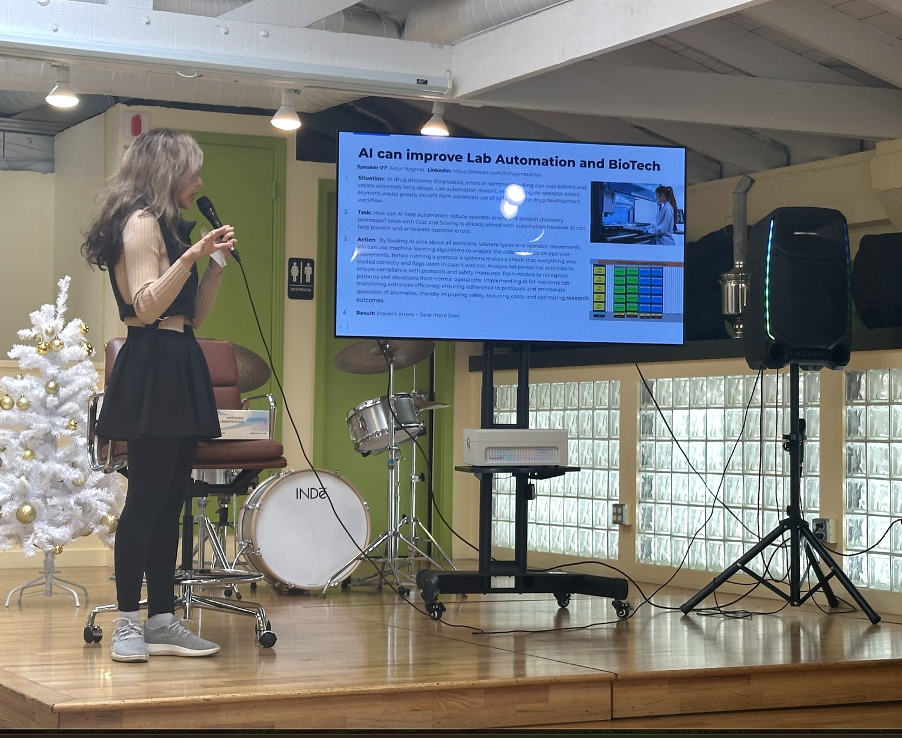
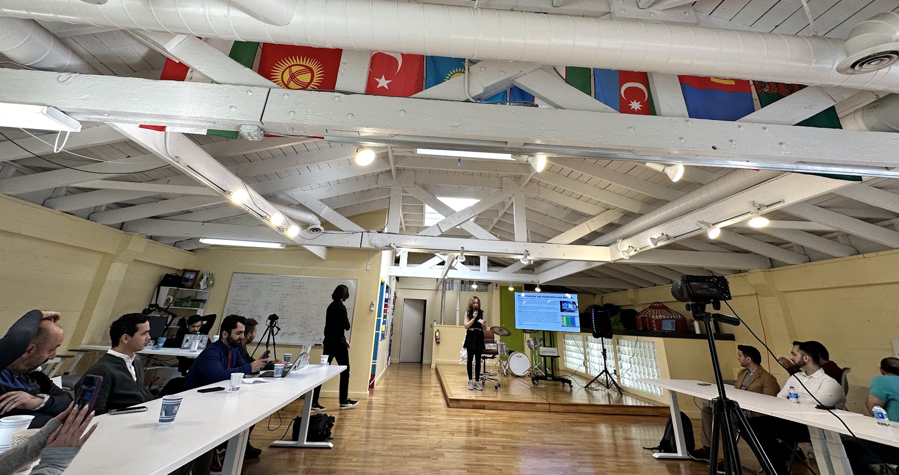
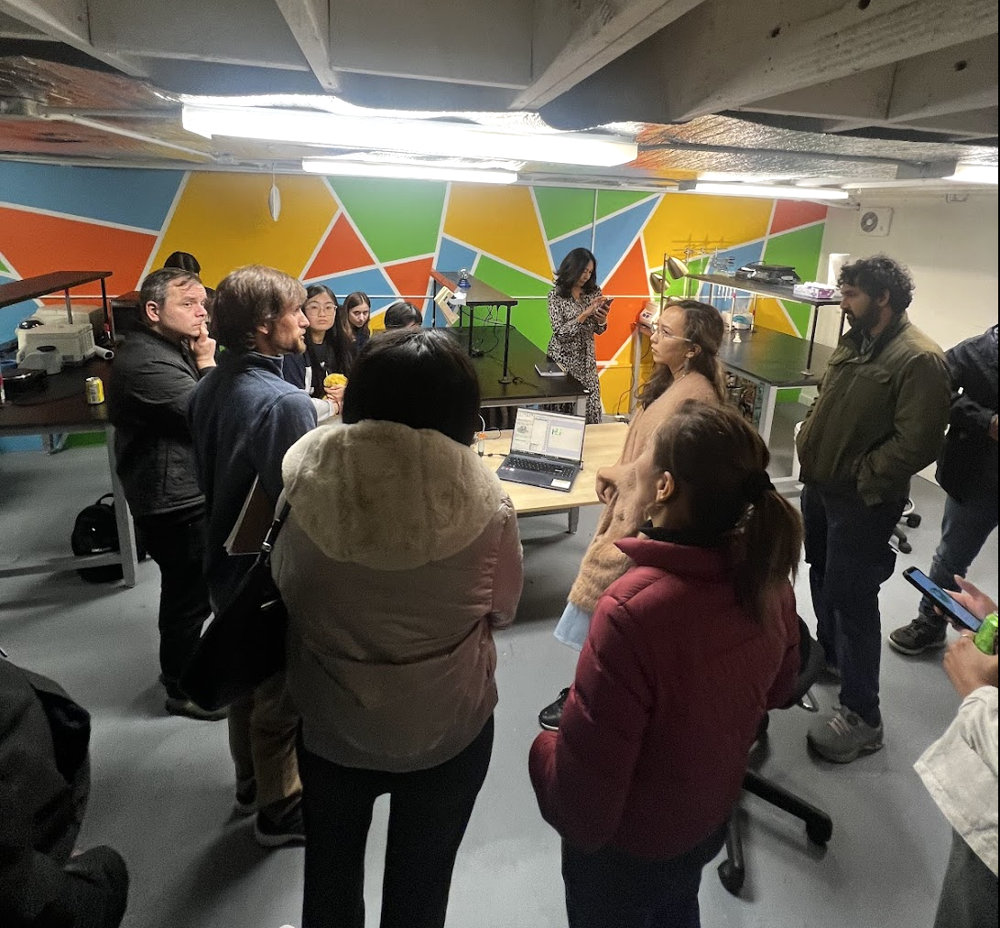
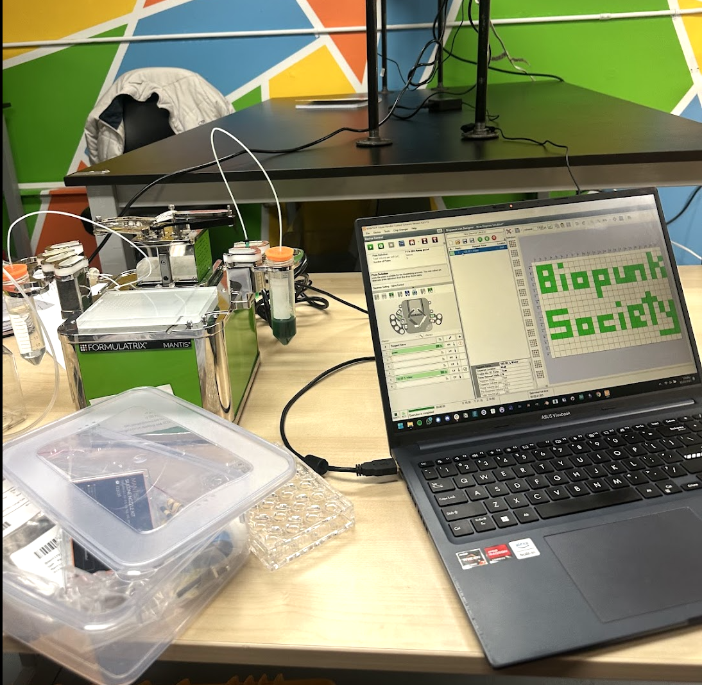
Thank you for reading. The full list of methods I developed at Hexagon Bio is below.

Methods I Developed
- Cell Culture: Dilution Plating, Electroporation Transformation, Plasmid Prep, Plating
- Chemical Genetics: Aliquotting, Colony Hitpicking, Glycerol Stock and Pooling, Growth Plate Hitpicking, Inoculation from Omnitrays, PCR Setup, Pooling, qPCR Dilution and Setup
- Chemistry: LCMS Multiplex Hitpicking
- Drug Discovery: NPL Dilution, NPL Hitpicking, NPL Onboarding
- Forward Genetics: 6 Cell Dispense, 24 Well Cell Dispense, 24 Well Compound Dispense
- Whole Genome Sequencing: gDNA Normalization, Library Amplification Hitpicking, Library Normalization, Library Pooling, qPCR Dilution
- Fungen: gDNA Extraction, Index Primer, Index Primer Stamp
- Frag Prep: Amplicon Normalization, Bead Purification, Lightbench Size Selection, PCR Setup (plates), FragAmp, Channel-based Bead Purification, Lightbench Analytics
- Next-Generation Sequencing: DNA Addition, Double Sided Bead Clean, High Volume Bead Purification, Normalization, Pooling (384), Pooling
- PlasMod: Deletion Hitpicking, Ligation, Plasmid Pick and Norm
- PlasMORE: Dilution 1:100 Preparation, Dilution Plating, Fragment Batch Normalization, Hitpicking (384), Hitpicking, PCR to VB Dilution Hitpicking, Plate CherryPick, Plate Dilution, Plate Resuspension, Resuspension
- Quantification: Lunatic Stamp
- Reagent Prep: PCR Bead Dispense, Yeast Plasmid Extraction
- Standard Parts: Normalization and Aliquot, Post PCR Pooling, Secondary Pooling
- Synthetic DNA: Consolidation Normalization, Dilution, Resuspension
- Tools: Glycerol Stock Prep, IDT VB Plate Processing, IDT VB Plate Stamping, Lightbench Quantification, Pico Hitpicking, Plate to Tube Hitpick Transfer, Reagent Dispense, Tip Consolidation, Volume QC, Volume Verification
- Yeast: Amplicon Hitpicking, Backbone Digestion, Backbone Heat Shock, Backbone Normalization and Aliquot, Bead Extraction, Transformation